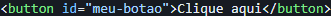
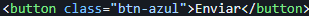
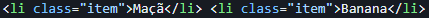

No JavaScript puro (Vanilla JS), se você quer mudar a cor de um botão, trocar um texto ou fazer algo acontecer quando o usuário clica em algum lugar, você precisa primeiro "pesgar" (selecionar) esse elemento lá do HTML e trazer para dentro do JavaScript.
Existem vários métodos para isso, mas hoje em dia, nós focamos nos "Três Grandes":
É o seletor mais clássico e rápido. Você usa quando o elemento HTML tem um id único.

Esse é o "canivete suíço" dos seletores. Ele permite buscar um elemento usando a mesma regra que você usa no CSS. Ele vai vasculhar o HTML e retornar apenas o primeiro elemento que encontrar.

Funciona igualzinho ao querySelector, mas em vez de trazer só o primeiro, ele traz todos os elementos que batem com a busca, organizados em uma lista (chamada de NodeList, que é bem parecida com um Array).
